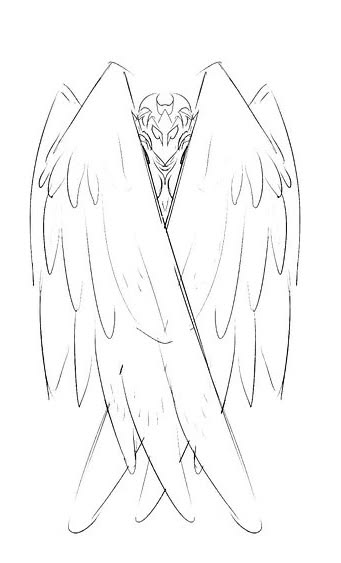
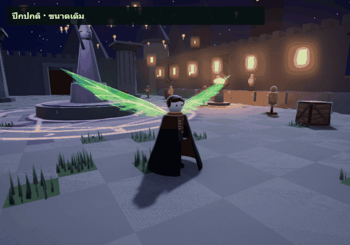
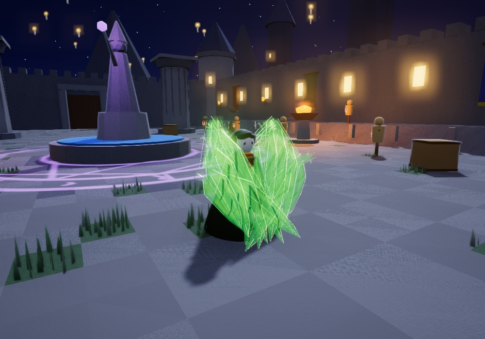
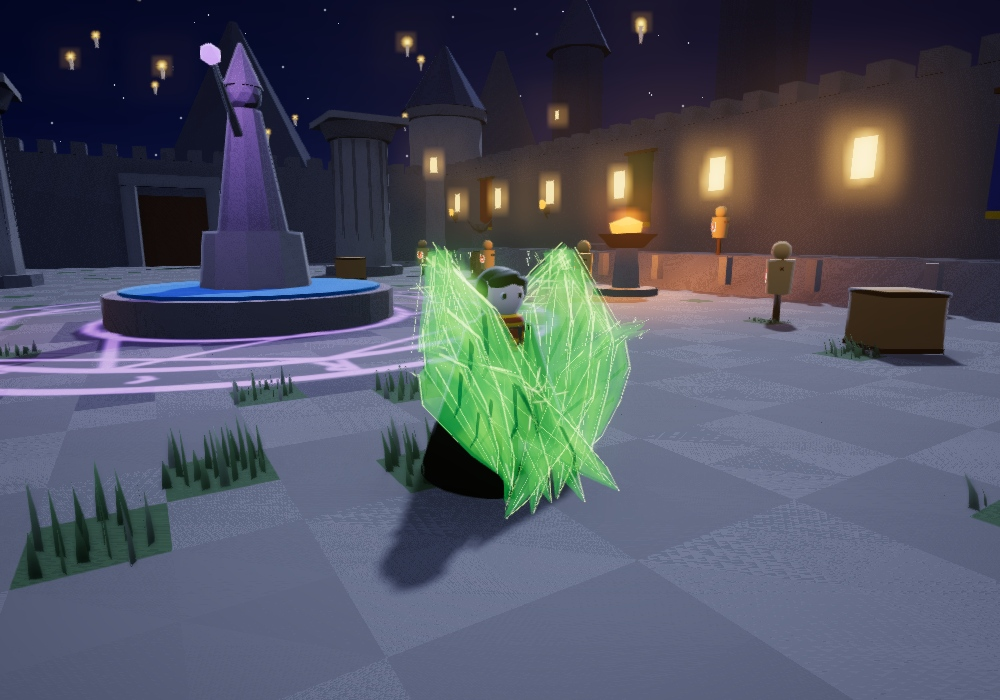
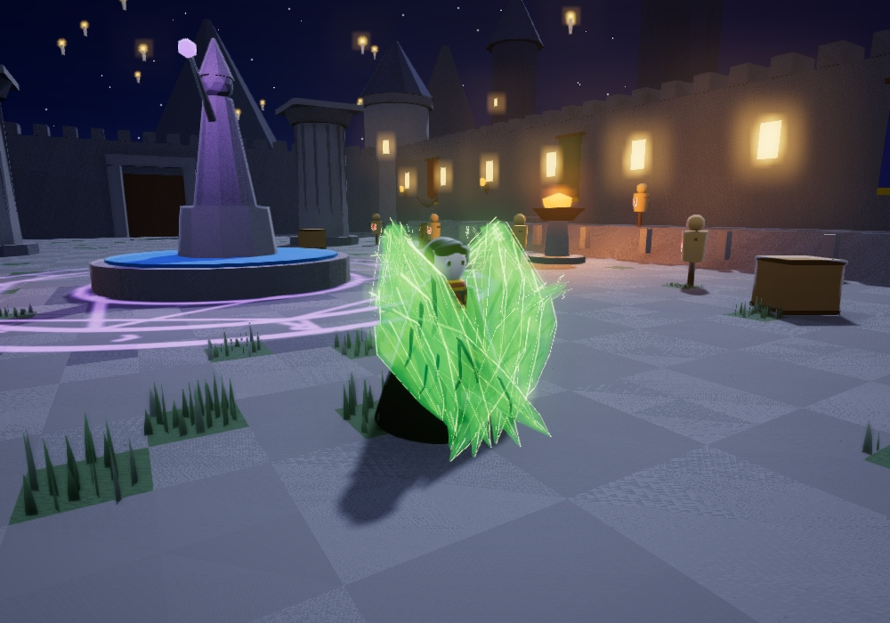
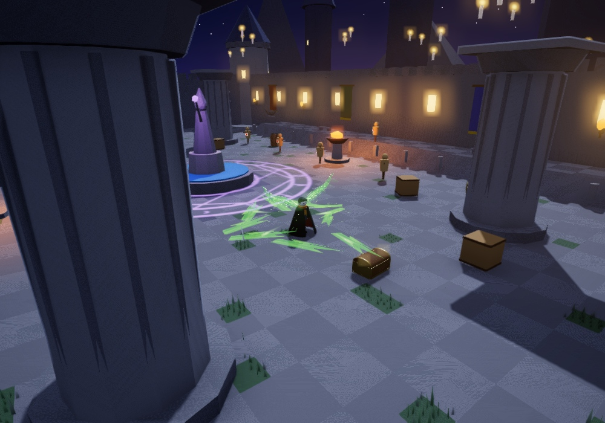
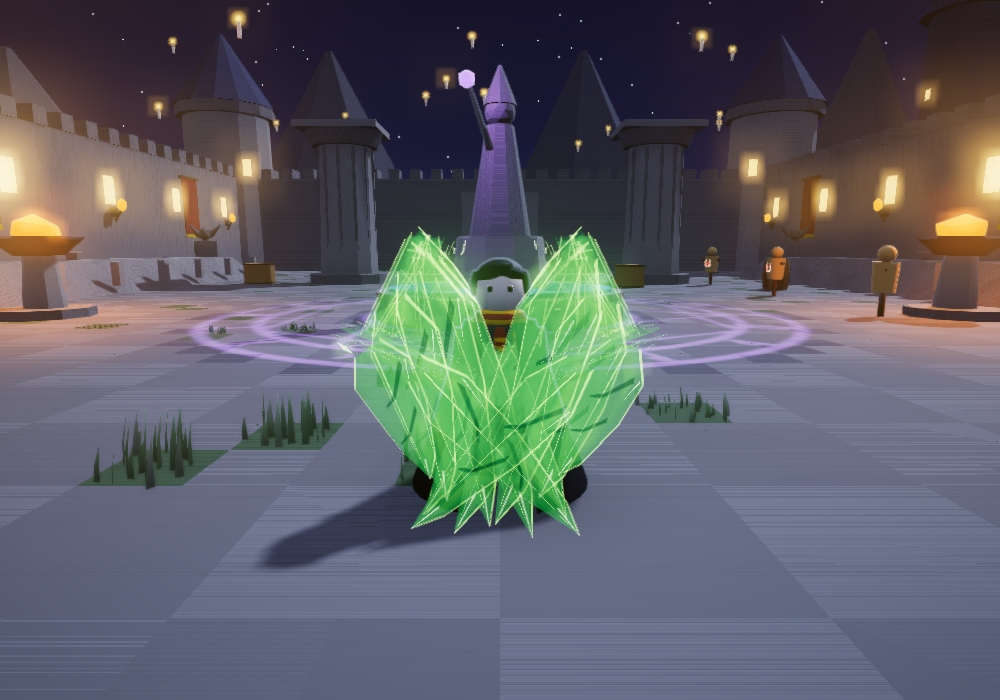
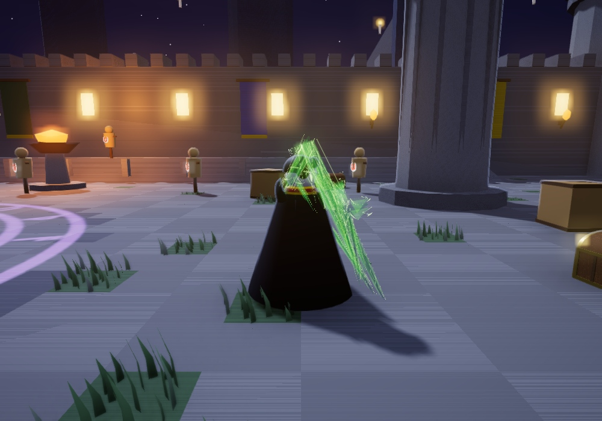
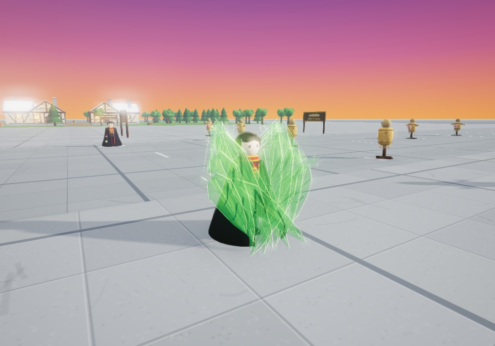

WIND · VFX STUDIO
โล่ปีกลม
ขนลมยืดยาว ห่อไขว้จากเหนือศีรษะถึงหน้าแข้ง · ตัวอย่างรอรีวิว

ทรงห่อเต็มตัวตามภาพอ้างอิง
ปีกปกติยังขนาดเดิม ขนลมด้านล่าง 6 ชิ้นต่อข้างยืดยาวและซ้อนเหลื่อมเฉพาะตอนป้องกัน
แสงเขียวนีออนโปร่ง เงาเข้มแบ่งชั้น ปลายเหลี่ยมไขว้ลงด้านหน้า


เริ่มยืดทันทีแล้วพับตามข้อปีก ยอดสูงเหนือศีรษะ แผ่นลมซ้อนไขว้ถึงหน้าแข้ง

ปีกสะเทือนสั้น ๆ ประกายวิ่งกลับตามข้อปีก สันเขียวค่อย ๆ สว่างขึ้น

บีบปีกเข้าหาตัวช่วงสั้น ๆ เน้นจังหวะเก็บแรงก่อนสะบัด

แฉกลมกวาดออกเป็นชิ้นแยก ขนลมยาวหดกลับ แล้วคืนปีกขนาดปกติที่กางค้าง


